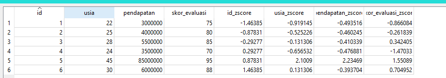
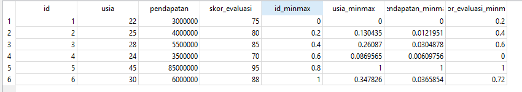
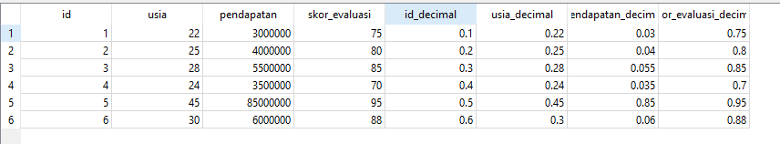
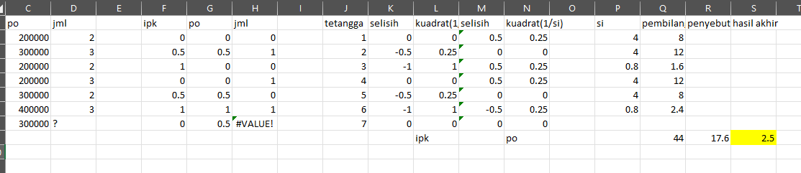
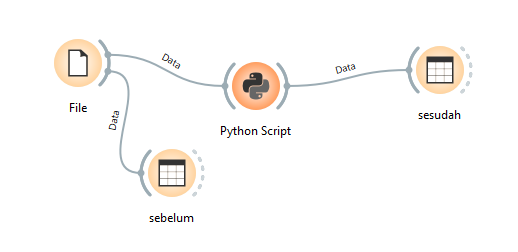
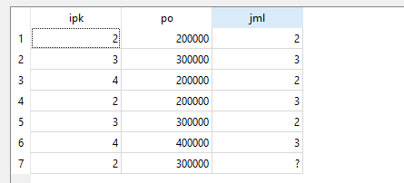
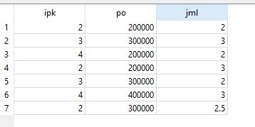

Pertemuan 5#
preprocessing#
Data mentah yang dikumpulkan ke dalam dataset sering kali belum cukup optimal untuk langsung diproses oleh algoritma Data Mining. Atribut asli mungkin dirancang hanya untuk sistem operasional awal dan belum memiliki kekuatan prediktif yang akurat.
Oleh karena itu, kita perlu melakukan serangkaian manipulasi untuk mentransformasi nilai asli menjadi variabel analitik tanpa membuat atribut baru, melainkan hanya mengubah distribusi nilainya. Tahap ini disebut dengan Normalisasi Data.
z score#
Konsep: Z-score Normalization (atau Standardisasi) mengubah distribusi data sedemikian rupa sehingga nilai rata-rata (\(\bar{A}\)) menjadi 0 dan simpangan baku (\(\sigma_A\)) menjadi 1.
Teknik ini sangat berguna ketika nilai minimum atau maksimum dari atribut tidak diketahui, atau ketika data memiliki outliers (pencilan ekstrem) yang dapat merusak skala jika kita menggunakan teknik Min-Max Normalization.
Rumus Standar: $\(v' = \frac{v - \bar{A}}{\sigma_A}\)$
Keterangan:
\(v\) = nilai asli
\(\bar{A}\) = nilai rata-rata atribut A
\(\sigma_A\) = simpangan baku (standard deviation) atribut A
Contoh Hasil Normalisasi:
Misalkan kita punya data asli: [10, 20, 30, 40, 100]. (Angka 100 adalah outlier).
Rata-rata (\(\bar{A}\)) = 40
Simpangan baku (\(\sigma_A\)) \(\approx\) 31.62
Hasil setelah dinormalisasi:
10 berubah menjadi -0.94
40 berubah menjadi 0.00 (berada tepat di titik rata-rata)
100 berubah menjadi 1.89
Implementasi Kode (Python):
import pandas as pd
from sklearn.preprocessing import StandardScaler
# Data contoh
df = pd.DataFrame({'nilai': [10, 20, 30, 40, 100]})
# 1. Menggunakan library sklearn
scaler = StandardScaler()
df['z_score_sklearn'] = scaler.fit_transform(df[['nilai']])
# 2. Membuat fungsi sendiri (Manual)
def z_score_manual(kolom):
rata_rata = kolom.mean()
standar_deviasi = kolom.std(ddof=0) # ddof=0 untuk perhitungan simpangan baku populasi
return (kolom - rata_rata) / standar_deviasi
df['z_score_manual'] = z_score_manual(df['nilai'])
print(df)
Agar kode Z-score tersebut bisa bekerja menyatu dengan data asli di Orange, kita perlu mengubahnya menjadi seperti ini:
Kode Z-Score Khusus untuk Orange Data Mining Silakan copy-paste kode di bawah ini ke dalam widget Python Script di Orange:
import numpy as np
import pandas as pd
from Orange.data.pandas_compat import table_to_frame, table_from_frame
from sklearn.preprocessing import StandardScaler
# Pastikan ada data yang masuk dari widget sebelumnya
if in_data is not None:
# 1. Ubah format data Orange (in_data) ke Pandas DataFrame
df = table_to_frame(in_data)
# Deteksi otomatis kolom mana saja yang berisi angka
numeric_cols = df.select_dtypes(include=[np.number]).columns
# 2. MENGGUNAKAN SKLEARN (StandardScaler)
scaler = StandardScaler()
# Lakukan perulangan untuk menormalisasi setiap kolom angka
for col in numeric_cols:
# Kita buat kolom baru dengan akhiran '_zscore' agar data asli tidak hilang
df[f'{col}_zscore'] = scaler.fit_transform(df[[col]])
# 3. Ubah kembali Pandas DataFrame menjadi format tabel Orange (out_data)
out_data = table_from_frame(df)

min-max normalisation#
Konsep: Min-Max Normalization bertujuan untuk mengubah skala semua nilai numerik dari suatu atribut ke dalam rentang spesifik (tertentu), yang paling umum adalah antara 0 sampai 1 atau -1 sampai 1.
Teknik ini paling sering digunakan untuk menyamakan skala data sebelum dimasukkan ke dalam algoritma machine learning berbasis jarak (seperti K-Nearest Neighbors) agar atribut dengan nilai asli yang besar tidak mendominasi atribut bernilai kecil secara tidak adil dalam perhitungan jarak. Teknik ini juga sering dipakai dalam Artificial Neural Networks (ANN) untuk mempercepat proses konvergensi.
Rumus Umum: $\(v' = \frac{v - min_A}{max_A - min_A} (new\_max_A - new\_min_A) + new\_min_A\)$
Catatan: Jika rentang barunya adalah [0, 1], maka rumusnya dapat disederhanakan menjadi: $\(v' = \frac{v - min_A}{max_A - min_A}\)$
Contoh Hasil Normalisasi:
Menggunakan data asli yang sama: [10, 20, 30, 40, 100]. Rentang baru yang diinginkan adalah 0 sampai 1.
Nilai minimum (\(min_A\)) = 10
Nilai maksimum (\(max_A\)) = 100
Hasil setelah dinormalisasi:
10 berubah menjadi 0.0 (batas bawah)
40 berubah menjadi 0.33 (hasil dari \((40 - 10) / 90\))
100 berubah menjadi 1.0 (batas atas)
Implementasi Kode (Python):
import pandas as pd
from sklearn.preprocessing import MinMaxScaler
# Data contoh (melanjutkan data sebelumnya)
df = pd.DataFrame({'nilai': [10, 20, 30, 40, 100]})
# 1. Menggunakan library sklearn
# Secara default, MinMaxScaler menggunakan rentang (0, 1)
minmax_scaler = MinMaxScaler(feature_range=(0, 1))
df['minmax_sklearn'] = minmax_scaler.fit_transform(df[['nilai']])
# 2. Membuat fungsi sendiri (Manual)
def minmax_manual(kolom, new_min=0, new_max=1):
nilai_min = kolom.min()
nilai_max = kolom.max()
return ((kolom - nilai_min) / (nilai_max - nilai_min)) * (new_max - new_min) + new_min
df['minmax_manual'] = minmax_manual(df['nilai'])
print(df)
Implementasi Kode (Orange Data Mining) Kode ini digunakan di dalam widget Python Script pada Orange untuk memproses data dari tabel yang masuk (in_data).
import numpy as np
import pandas as pd
from Orange.data.pandas_compat import table_to_frame, table_from_frame
from sklearn.preprocessing import MinMaxScaler
if in_data is not None:
# 1. Ubah format tabel Orange ke Pandas DataFrame
df = table_to_frame(in_data)
# Deteksi otomatis kolom numerik
numeric_cols = df.select_dtypes(include=[np.number]).columns
# 2. Proses normalisasi menggunakan sklearn
minmax_scaler = MinMaxScaler(feature_range=(0, 1))
for col in numeric_cols:
# Membuat kolom baru dengan akhiran '_minmax'
df[f'{col}_minmax'] = minmax_scaler.fit_transform(df[[col]])
# 3. Kembalikan data ke format Orange agar bisa diteruskan ke widget Data Table
out_data = table_from_frame(df)

decimal scalling#
Konsep: Decimal Scaling adalah teknik normalisasi yang sangat sederhana untuk mengecilkan nilai numerik dengan cara menggeser titik desimalnya (membaginya dengan angka kelipatan 10, seperti 10, 100, 1000, dan seterusnya).
Tujuannya adalah agar nilai absolut maksimum dari atribut tersebut menjadi kurang dari 1 (\(< 1\)). Teknik ini berguna ketika kita hanya ingin memperkecil angka tanpa merusak proporsi atau jarak antar data sama sekali.
Rumus: $\(v' = \frac{v}{10^j}\)$
Keterangan:
\(v\) = nilai asli
\(j\) = bilangan bulat terkecil yang membuat nilai maksimum dari \(|v'| < 1\). (Sederhananya, \(j\) adalah jumlah digit dari angka absolut terbesar di atribut tersebut).
Contoh Hasil Normalisasi:
Menggunakan data asli: [10, 20, 30, 40, 100].
Nilai absolut terbesar adalah 100.
Angka 100 memiliki 3 digit, sehingga nilai \(j = 3\).
Kita akan membagi semua data dengan \(10^3\) (yaitu 1000).
Hasil setelah dinormalisasi:
10 berubah menjadi 0.01
40 berubah menjadi 0.04
100 berubah menjadi 0.10 (nilainya sekarang \(< 1\))
Implementasi Kode (Python):
Catatan: Pustaka scikit-learn (sklearn) tidak memiliki fungsi bawaan yang secara spesifik melakukan Decimal Scaling murni (yang terdekat adalah MaxAbsScaler, namun membaginya dengan nilai maksimum absolut, bukan kelipatan 10). Oleh karena itu, kita membuat fungsi kustom menggunakan NumPy dan Pandas.
import pandas as pd
import numpy as np
# Data contoh
df = pd.DataFrame({'nilai': [10, 20, 30, 40, 100]})
# 1. Membuat fungsi sendiri (Manual) menggunakan NumPy
def decimal_scaling_manual(kolom):
# Cari nilai absolut maksimum dari kolom tersebut
max_abs = np.max(np.abs(kolom))
# Hitung jumlah digit dari nilai maksimum tersebut (menentukan nilai j)
# Ubah menjadi integer (hilangkan koma jika ada), jadikan string, lalu hitung panjangnya
j = len(str(int(max_abs)))
# Bagikan nilai asli dengan 10 pangkat j
return kolom / (10**j)
df['decimal_scaling'] = decimal_scaling_manual(df['nilai'])
print(df)
Implementasi Kode (Orange Data Mining) Kode ini digunakan di dalam widget Python Script pada Orange untuk memproses data dari tabel yang masuk (in_data).
import numpy as np
import pandas as pd
from Orange.data.pandas_compat import table_to_frame, table_from_frame
if in_data is not None:
# 1. Ubah format tabel Orange ke Pandas DataFrame
df = table_to_frame(in_data)
# Deteksi otomatis kolom numerik
numeric_cols = df.select_dtypes(include=[np.number]).columns
# 2. Proses normalisasi Decimal Scaling
for col in numeric_cols:
# Cari nilai absolut maksimum, abaikan nilai kosong (NaN)
max_abs = np.nanmax(np.abs(df[col]))
# Pastikan tidak membagi dengan nol jika kolomnya kosong semua
if max_abs > 0 and not np.isnan(max_abs):
# Hitung jumlah digit angka dari nilai maksimum
j = len(str(int(max_abs)))
# Membuat kolom baru dengan akhiran '_decimal'
df[f'{col}_decimal'] = df[col] / (10**j)
else:
# Jika datanya kosong/nol semua, kembalikan nilai aslinya
df[f'{col}_decimal'] = df[col]
# 3. Kembalikan data ke format Orange agar bisa diteruskan ke widget Data Table
out_data = table_from_frame(df)

Missing values : menyelesaikan dengan WKNN (manual) + code menghitung WKNN#
Catatan ini mendemonstrasikan cara melakukan imputasi data yang hilang (missing values) menggunakan metode Weighted K-Nearest Neighbors (WKNN). Metode ini memperkirakan nilai yang hilang dengan mencari tetangga terdekat berdasarkan fitur lain yang tersedia, lalu menghitung rata-rata tertimbang (weighted average) di mana tetangga yang lebih dekat memiliki bobot (pengaruh) yang lebih besar.
1. Data Asli#
Misalkan kita memiliki dataset berikut (Asumsi penempatan di Excel: Header berada di baris 1, data berada di kolom A, B, C mulai baris 2 hingga 8).
Baris Excel |
A (ipk) |
B (po) |
C (jml) |
|---|---|---|---|
2 |
2 |
200000 |
2 |
3 |
3 |
300000 |
3 |
4 |
4 |
200000 |
2 |
5 |
2 |
200000 |
3 |
6 |
3 |
300000 |
2 |
7 |
4 |
400000 |
3 |
8 (Target) |
2 |
300000 |
? |
Karena skala atribut ipk (satuan) dan po (ratusan ribu) sangat berbeda, kita wajib melakukan Normalisasi Min-Max agar perhitungan jarak adil.
2. Penghitungan Manual Menggunakan Excel#
Berikut adalah simulasi tabel bantu di Excel beserta rumus yang diketikkan pada baris pertama data (Baris 2). Anda cukup men-drag (menarik) rumus ini ke bawah hingga baris ke-7.
A. Normalisasi Min-Max#
Buat kolom bantuan baru untuk nilai yang dinormalisasi (Misal di kolom F dan G).
Kolom F2 (
ipk_norm):=(A2-MIN($A$2:$A$8))/(MAX($A$2:$A$8)-MIN($A$2:$A$8))Kolom G2 (
po_norm):=(B2-MIN($B$2:$B$8))/(MAX($B$2:$B$8)-MIN($B$2:$B$8))
Catatan: Nilai target di baris 8 juga ikut dinormalisasi dengan rumus yang sama. Hasilnya target memiliki ipk_norm di sel F8 (=0) dan po_norm di sel G8 (=0.5).
B. Menghitung Jarak dan Bobot (Tabel WKNN)#
Buat kolom selanjutnya untuk menghitung komponen WKNN (Misal di kolom K sampai Q). Ketikkan rumus ini di Baris 2, lalu drag ke bawah sampai baris 7:
Kolom K2 (Selisih IPK):
=F2-$F$8(Nilai norm tetangga dikurangi nilai norm target)Kolom L2 (Kuadrat IPK):
=K2^2Kolom M2 (Selisih PO):
=G2-$G$8Kolom N2 (Kuadrat PO):
=M2^2Kolom P2 (Bobot /
si):=1/(L2+N2)(Rumus Bobot = 1 / Total Kuadrat Jarak)Kolom Q2 (Pembilang):
=P2*C2(Bobot dikali dengan nilai aslijmlpada tetangga tersebut)
Baris |
K (Selisih IPK) |
L (Kuadrat IPK) |
M (Selisih PO) |
N (Kuadrat PO) |
P (Bobot / si) |
Q (Pembilang) |
|---|---|---|---|---|---|---|
2 |
0 |
0 |
-0.5 |
0.25 |
4 |
8 |
3 |
0.5 |
0.25 |
0 |
0 |
4 |
12 |
4 |
1 |
1 |
-0.5 |
0.25 |
0.8 |
1.6 |
5 |
0 |
0 |
-0.5 |
0.25 |
4 |
12 |
6 |
0.5 |
0.25 |
0 |
0 |
4 |
8 |
7 |
1 |
1 |
0.5 |
0.25 |
0.8 |
2.4 |
C. Hasil Akhir (Weighted Average)#
Setelah semua baris tetangga dihitung, buat sel rekapitulasi di bawah tabel:
Total Pembilang (Sel Q9):
=SUM(Q2:Q7)\(\rightarrow\) Hasilnya: 44Total Penyebut / Bobot (Sel P9):
=SUM(P2:P7)\(\rightarrow\) Hasilnya: 17.6Estimasi Nilai
jml(Sel S9):=Q9/P9\(\rightarrow\) Hasilnya: 2.5
Jadi, nilai imputasi untuk data yang hilang adalah 2.5.

3. Kode Implementasi di Python (Orange Data Mining)#
Untuk mengotomatisasi proses di atas tanpa harus menyusun rumus Excel satu per satu, kita bisa menggunakan script Python (via widget Python Script di Orange). Script di bawah ini menggunakan pustaka scikit-learn untuk normalisasi, dan otomatis menangani berapapun jumlah kolom serta baris yang kosong.
import numpy as np
import pandas as pd
from Orange.data.pandas_compat import table_to_frame, table_from_frame
from sklearn.preprocessing import MinMaxScaler
if in_data is not None:
# 1. Konversi data Orange ke Pandas DataFrame
df = table_to_frame(in_data)
# Otomatis mendeteksi semua kolom yang bertipe numerik (angka)
numeric_cols = df.select_dtypes(include=[np.number]).columns
df_calc = df[numeric_cols].copy()
# 2. Normalisasi Min-Max otomatis menggunakan sklearn
scaler = MinMaxScaler()
df_calc[numeric_cols] = scaler.fit_transform(df_calc[numeric_cols])
# 3. Proses Imputasi WKNNI
# Cari indeks baris yang memiliki setidaknya satu nilai kosong (NaN)
baris_kosong = df[df.isnull().any(axis=1)].index
for idx in baris_kosong:
kolom_kosong = df.columns[df.loc[idx].isnull()]
for target_col in kolom_kosong:
if target_col not in numeric_cols:
continue
# Filter tetangga yang datanya tidak kosong pada kolom yang dicari
tetangga_idx = df[df[target_col].notnull()].index
if len(tetangga_idx) == 0: continue
# Cari fitur untuk menghitung jarak (kolom yang datanya sama-sama tersedia)
fitur_tersedia = df_calc.columns[df_calc.loc[idx].notnull()]
fitur_jarak = [c for c in fitur_tersedia if c != target_col]
if len(fitur_jarak) == 0: continue
target_features = df_calc.loc[idx, fitur_jarak]
tetangga_features = df_calc.loc[tetangga_idx, fitur_jarak]
# Hitung jarak dan bobot kemiripan
jarak_kuadrat = np.nansum((tetangga_features - target_features)**2, axis=1)
bobot = 1 / (jarak_kuadrat + 1e-10) # 1e-10 untuk cegah pembagian dengan nol
# Hitung Weighted Average
nilai_tetangga = df.loc[tetangga_idx, target_col]
estimasi = np.sum(bobot * nilai_tetangga) / np.sum(bobot)
# Masukkan hasil kembali ke tabel asli
df.loc[idx, target_col] = round(estimasi, 2)
print(f"Baris ke-{idx + 1}, Kolom '{target_col}' diestimasi: {round(estimasi, 2)}")
# 4. Kembalikan ke format Orange
out_data = table_from_frame(df)
workflow orange data mining#

data table sebelum#

data table sesudah#
